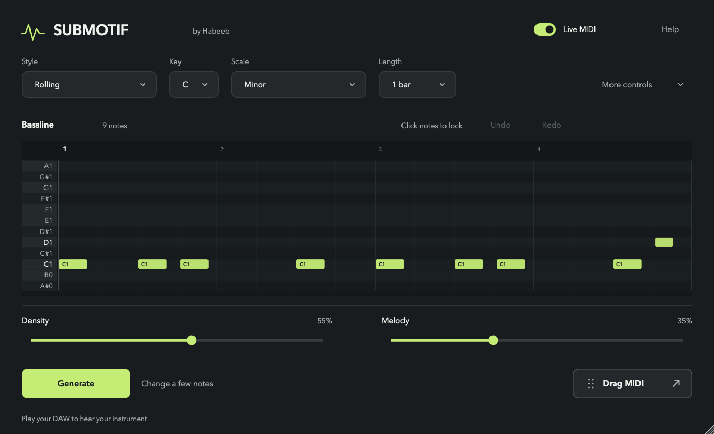

Max for Live
Submotif.amxdSerum
Load the MIDI device before your instrument. Enable Live MIDI and start playback.
Free, open-source MIDI generation in six house styles. Play the notes through your own instrument.
Free · AGPLv3 · VST3 + Max for Live

Fresh MIDI in C minor.
A repeating motif grounded in the root.
Six selected phrases with drum backing. Save their MIDI to play through your own synth.
Put the Max for Live device before Serum. Your preset supplies the sound.
Load the MIDI device before your instrument. Enable Live MIDI and start playback.
On Serum’s track, choose Submotif under MIDI From and set Monitor to In.